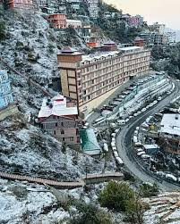
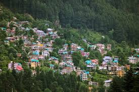
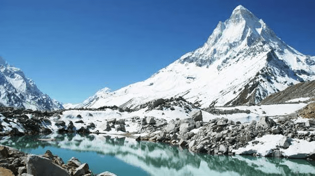

Shimla
Nestled in the heart of Shimla is a stunning colonial-era fort that echoes tales of the past — an architectural marvel built during the British Raj in the 19th century, blending seamlessly with the misty hills and pine-covered slopes. This majestic fort was constructed on a ridge that once housed an ancient temple site, believed to be sacred for centuries. Though much of the original structure has faded with time, the remnants still hold immense historical and cultural significance.
Today, the Indian Army maintains the premises, yet parts of the fort remain open to visitors who wish to soak in the panoramic views and colonial-era charm. The fort's wide walking paths, quaint stone walls, and hilltop vantage points offer a serene retreat from the bustling Mall Road below. Inside the fort grounds, you can stumble upon old chapels, officers’ lodges, and timeless colonial bungalows, such as the iconic Wellesley House — each narrating a different chapter of Shimla’s British legacy.
Whether you explore the fort on foot or take a local ride through winding roads, this hidden gem in Shimla offers a rich heritage experience wrapped in cool mountain air and timeless charm.

Spiti Valley
Perched on the jagged cliffs overlooking the twin gorges of Split Valley, the Koneswaram Temple stands as a sacred beacon, radiating divinity and ancient wisdom across the surrounding expanse. Known as the "Kailasa of the North," this remarkable temple is a revered pilgrimage site for Hindus and spiritual seekers from across regions. The views from the temple are nothing short of breathtaking — sheer drops, winding rivers far below, and sweeping skies above create a natural amphitheater that enhances the temple’s sanctity.
Koneswaram Temple is one of the five sacred 'Pancha Ishwarams' — abodes of Lord Shiva — and this particular shrine is famed for its location on the peak known locally as 'Konam', derived from an ancient word for 'summit'. It is believed that the earliest temple was constructed as early as 400 BCE, evolving over centuries through the 5th century CE and seeing a significant restoration in the 20th century. Though the original thousand-pillared hall and elevated sanctum were lost to history, many of the sculpted relics and sacred icons were reinstalled during a meticulous reconstruction completed in 1963.

Manali
Tucked amidst the serene hills and pine-scented air of Manali, the Kanniya Hot Springs offer a tranquil escape into nature’s healing embrace. Located just beyond the bustle of town, this unique site features a series of seven square-shaped thermal wells, each about four feet deep. The temperature of the water varies from well to well, ranging from pleasantly warm to hot — a welcome balm for weary travelers and spiritual seekers alike.
The springs are a fascinating testament to nature’s quiet miracles. Despite their shallow depth, the waters are crystal clear, allowing visitors to see the stone-lined bottom. Remarkably, just 10–15 buckets drawn from each well can nearly empty them, showing the shallow yet constant geothermal flow. Many believe that the waters possess therapeutic qualities, making them a popular stop for those seeking physical and emotional rejuvenation.
Historically, the springs were also used by Buddhist monks and Hindu devotees for ritual purification, adding layers of spiritual depth to the site. Today, the springs are maintained by the nearby Mari Amman temple, with support from local administration and caretakers who preserve the serene environment.

parvati valley
Tucked away just beyond the more frequented trails of Parvati Valley lies the hidden gem of Arisimale Meadow, a serene, lesser-known escape surrounded by lush greenery and rolling hills. Though modest in size, this peaceful retreat offers a perfect blend of mountain charm and tranquil beauty, making it a favorite spot among nature lovers and peace seekers.
Framed by pine forests and hills, Arisimale Meadow is an ideal place to witness stunning sunsets as the golden hues cast a glow over the Himalayan peaks. While the setting is peaceful, a few local tea stalls and cafes nearby serve up warm meals and traditional Himachali refreshments for tired trekkers and wanderers.
There’s also a small base camp nearby used by forest rangers, ensuring the area remains safe and preserved. Basic amenities like a parking area and rest stops make it easy for visitors to explore the space, relax, and take in the breathtaking landscape.

McLeod Ganj
Hidden in the folds of the Dhauladhar range near McLeod Ganj lies the pristine “Marble Meadow” — a serene escape that mirrors the calm and beauty of a secluded beach, but nestled in the mountains. Known for its sparkling white sand-like alpine grass and crystal-clear glacial streams, this meadow is considered one of the cleanest and most tranquil spots in the region, perfect for solo travelers seeking peace.
Marble Meadow offers a variety of activities including short nature trails, meditative spots, and birdwatching. Scattered around the area are local Himachali cafés and tea stalls, where travelers can enjoy freshly made dishes while soaking in the mountain views.
A small rocky hillock within the meadow resembles an island, and the area is a hotspot for spotting endemic Himalayan bird species and elusive mountain mammals, making it a nature lover’s paradise.

kullu
Tucked away in the scenic valleys of Kullu is the serene "Marble Stream Meadow" — a pristine natural retreat that mirrors the charm of a coastal beach, but with a unique Himalayan twist. Known for its soft, white river-sanded banks and crystal-clear mountain stream, this peaceful spot is often considered one of the cleanest and most tranquil areas in the region, making it ideal for solo travelers looking for calm and reflection.
The meadow offers a range of relaxing outdoor activities like riverside walks, birdwatching, and peaceful meditation sessions under the pines. Lining the edge of the area are open-air cafés and local food stalls serving up Himachali delicacies and herbal teas, perfect for unwinding.
A tiny rocky knoll resembling an island sits at the heart of the meadow, often visited by native Himalayan bird and animal species, making it a hidden gem for nature enthusiasts.